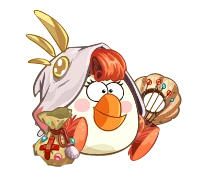

Персонажи
Птицы
В Angry Birds Epic каждая птица получила уникальную способность и несколько костюмов (классов):
Ред получил костюмы рыцаря, стражника, самурая, паладина, мстителя и каменного стража, а также элитные и тематические улучшения для них. При атаке по
свиньям
Ред ударяет определённую свинью, на которую указывает игрок. Если игрок укажет не на свинью, а на птицу, или же просто нажмёт на самого Реда, он активирует защитное поле, которое будет уменьшать наносимый всем птицам урон на 20-55% (в зависимости от класса
птицы) и действовать в течение 1-3 ходов — такая защитная способность присутствует у большинства (но не у всех) классов персонажа.
Чак получил костюмы мага, птицы-молнии, птицы-дождя, волшебника, птицы-грома, иллюзиониста, а также различные улучшения для них. При атаке по свиньям Чак выстреливает молнией или ядовитым дождём (в зависимости от класса), тем самым нанося урон не одной
конкретной свинье, а всем сразу (иллюзионист наносит урон одному врагу). Если навести Чака не на свинью, а на птицу, эффекты могут быть различны (например, Маг и Птица-гром дают силовой щит, а Птица-дождь исцелит птиц и снимет с цели негативные эффекты).
Матильда получила костюмы жрицы, друида, принцессы, барда, попадьи и ведьмы (а также элитные и тематические улучшения для них). При атаке она просто ударяет определённую свинью, на которую указывает игрок. Характерной защитной способностью, которая присутствует
у всех классов белой птицы, является умение лечить других птиц. Чтобы вылечить птиц, нужно навести Матильду не на врага, а на одну из птиц, или кликнуть по самой Матильде. Количество единиц, на которые лечит белая птица, у разных классов различны.

Бомб получил костюмы пирата, канонира, берсерка, капитана, морского волка, корсара и ледяного дикаря, а также различные улучшения для них. При атаке по свиньям ударяет одну из свиней своей перчаткой или дальнобойным оружием — например, фейерверком или
игрушечным пистолетом — нанося высокий урон. Защитные способности Бомба обычно связаны с повышением наносимого свиньям урона (например, увеличение урона или контратака).
Синяя троица получила костюмы ловкачей, жуликов, шпионов, стрелков, свинопытов и охотников за сокровищами, а также элитные и тематические улучшения для них. При атаке по свиньям они дистанционно атакуют их орудиями дальнего боя, обычно нанося немаленький
урон. Защитные способности у разных классов Синих очень различны и связаны с особыми эффектами.
Также в качестве могучего персонажа в игре появляется Могучий Орёл — в этой игре его можно вызвать, активировав зелье «Любимое блюдо Могучего орла». Помимо уровней, он появляется в своём додзё и во время загрузки уровней и локаций и дает игроку советы.
После добавления в игру мультиплеера, в качестве неиграбельного персонажа также появился Теренс. Он, как ни странно, является капитаном корабля, устраивающего бои птиц на палубе. Во время сражения, Теренс сидит на огромном троне и наблюдает за битвой.
Остальные птицы в игре пока не появились. Могут ли они появиться в игре в будущем, неизвестно
Свиньи
В отличие от играбельных птиц, которых в Epic только пять, свиней в этой игре просто огромнейшее количество. Практически каждая свинья обладает уникальным внешним видом, оружием и аксессуарами. У многих свиней, так же как и у птиц, есть особые способности,
которые так или иначе влияют на птиц (например, некоторые свиньи могут оглушать птиц, противостоять некоторым их способностям или даже защищать других свиней).
Среди свиней имеется несколько групп врагов, которые отличаются по силе и внешности: Миньоны — в основном, легко уничтожаются и встречаются чаще всего (Фермер, Жулик, Свиностраж). Призраки — различные духи, которые после уничтожения остаются трупами на
протяжении 2 ходов, после чего возвращаются в битву (Банши, Дух). Зомби — различные живые мертвецы, которые после уничтожения остаются трупами на протяжении 2-3 ходов, после чего возвращаются в битву (Зомби, Рыцарь-зомби). Пираты — враги, чаще всего
имеющие иммунитет к негативным эффектам (Пират, Приятель, Бывалый пират и прочие). Пигмеи — слабые враги, которые часто могут призывать себе подобных (Маленькие пигмеи, Лесные пигмеи). Боровы — сильные и прочные враги, способные заряжаться в течение
нескольких ходов и наносить сильные удары (Боров, Юнга, Большой пират). Маги — волшебники, дающие положительные эффекты другим врагам и часто заряжающиеся перед атакой (Огнесвин, Природная свинья). Шаманы — похожие на магов. Отличаются тем, что практически
всегда имеют способности, связанные с лечением (Кок, Ведьмовской врач). Рыцари — крепкие свиньи, имеющие иммунитет к слабым атакам и часто умеющие ставить щит (Рыцарь света, Королевский стражник). Ниндзя — маленькие свиньи, имеющие иммунитет к сильным
атакам (Красный ниндзя). Усатые свиньи — большинство пассивно увеличивают урон на 25% за каждого убитого союзника, имеют высокую прочность (Бригадир, Капитан Красная борода). Бомбы — различные бомбы, которые через определённое время взрываются (Бомба-ловушка).
Дроны — различные роботы, которые чаще всего наносят больше урона определенным птицам (Подлый, Красный дрон-охотник).
Герои — главные боссы игры, непохожие по характеристикам на других свиней. Это Свиномаг, Король свиней, Принц Сало. В качестве боссов чаще всего выступают Боровы, Рыцари, Усатые свиньи и Герои, но среди других групп врагов также иногда встречаются боссы.
Из уже знакомых по другим играм свиньям в Epic также появляется Капрал, который выступает в качестве обычного врага. Ещё в игре присутствует персонаж из Angry Birds Toons, Свин Хрякович, который помогает птицам и на некоторых уровнях даже является
играбельным персонажем. Также играбельным персонажем за птиц после прохождения сюжетной части игры на некоторых уровнях становится Свинья-авантюрист. Помимо них, косвенную помощь птицам оказывают Свинья-профессор и Золотая свинья-копилка.